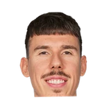

“That (interest) was born from a tweet that came out of Croatia that spoke of Campazzo in the NBA. I’m going to tell you something, just to be clear. In the past two years, during the season, NBA scouts have spoken to me a thousand times to ask. If you add to that the players continue to evolve… Campazzo, I said it 3 years ago, is the best guard in Europe, and being the best guard in Europe means being one of the 3 best players in Europe. If the NBA does not keep an eye on one of the best, it would be crazy”

What NBA players and coaches have said about Facundo Campazzo
13 quotes about Facundo Campazzo from 10 players, coaches and executives, newest first. Each one links to its original source.
Best quotes
Michael Singer:Michael Malone:
“I have a feeling that there’s gonna be a lot of kids running around LoHi, Castle Rock, all over Denver metro area wearing Campazzo jerseysbecause he’s that kind of a player where people can relate to him and they really get excited watching him play.”
Harrison Wind:Malone on Jokic and Campazzo:
“Two of the best passers in the world. Even today in practice, our guys have to get used to playing with them. If you don't have your eye on the ball, (Campazzo) is going to break your nose.”
What Facundo Campazzo has said about other players and coaches →
Quotes per season
Who talks about Facundo Campazzo most
- Michael Malone on Facundo Campazzo4 quotes
- Calvin Booth1 quote
 Charlie Villanueva1 quote
Charlie Villanueva1 quote Jose Calderon1 quote
Jose Calderon1 quote Kevin Love1 quote
Kevin Love1 quote Maxi Kleber1 quote
Maxi Kleber1 quote Michael Porter1 quote
Michael Porter1 quote Nicolas Laprovittola1 quote
Nicolas Laprovittola1 quote
Vlatko Cancar1 quote Wayne Ellington1 quote
Wayne Ellington1 quote
2022-23
4 quotes“Then it depends on the role, the physicality, the rhythm... NBA is not easy. Some players like Gaby Deck or Facundo Campazzo may not fit here for different reasons, but they can have amazing careers in Europe,”
“I do not watch NBA, I got upset after what happened with Luca [Vildoza], Facu [Campazzo], and Gaby [Deck]. It is not a good destination for us.”
Dwain Price:Maxi Kleber on new G Facundo Campazzo:
“It will be very interesting to see how he works with us. He will be good for the team just from the standpoint of the energy, but also his passing skills are really incredible,too. I’m excited to see what he brings to the table for us.”
“Facundo Campazzo gave his heart and soul when he was here. He was loved in the locker room,”
2021-22
2 quotesMike Trudell:Wayne Ellington on DEN guard Facundo Campazzo shoving him the back last night:
“I thought it was a cheap, dirty play. I don’t think there’s room in basketball for that… when you shove a guy in the back, a lot (can come from it). It’s dangerous.”
#CavsKevin Love on the Ricky Rubio-Facundo Campazzo dustup:
“That was funny, that would’ve been one of the worst fights I’ve ever seen in my life”
2020-21
6 quotesMichael Porter on Facundo Campazzo:
“You need players on your team who are willing to make those straight up hustle plays. Facu doesn’t care how much he scores, he doesn’t care how many assists he gets. All he wants to do is win and he’s willing to put his heart on the floor every night and that’s contagious. We really love him over here.”
Michael Singer:Michael Malone:
“Facu Campazzo is going to play hard. He’s going to leave a piece of himself on the floor, and that’s why you love him because he’s a warrior.”
Harrison Wind:Malone on Facu Campazzo:
“I love him. He plays hard. He plays to win, and I'm going to do everything I can to get him in this game because when he's on the court good things happen for us.”
Michael Singer:Michael Malone:
“I have a feeling that there’s gonna be a lot of kids running around LoHi, Castle Rock, all over Denver metro area wearing Campazzo jerseysbecause he’s that kind of a player where people can relate to him and they really get excited watching him play.”
Michael Singer:Vlatko on playing against Facu Campazzo:
“I always said he’s a pain in the ass to play against.”
Vlatko Cancar on Facundo CampazzoTwitter @msinger
Harrison Wind:Malone on Jokic and Campazzo:
“Two of the best passers in the world. Even today in practice, our guys have to get used to playing with them. If you don't have your eye on the ball, (Campazzo) is going to break your nose.”
2019-20
1 quote“That (interest) was born from a tweet that came out of Croatia that spoke of Campazzo in the NBA. I’m going to tell you something, just to be clear. In the past two years, during the season, NBA scouts have spoken to me a thousand times to ask. If you add to that the players continue to evolve… Campazzo, I said it 3 years ago, is the best guard in Europe, and being the best guard in Europe means being one of the 3 best players in Europe. If the NBA does not keep an eye on one of the best, it would be crazy”